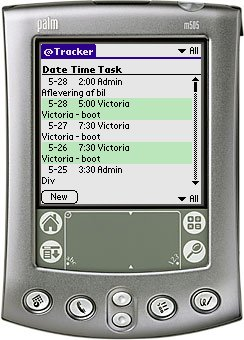

@Tracker is a small Activity Time Tracker used to record time spent in various tasks. The target audience are users in need of tracking time spent in f.ex. project related tasks in their daily job.
@Tracker runs on any Palm OS 3.1 or better device.
@Tracker is released under the GNU GPL 2.
tttxexport is a tool used to export the archives generated by @Tracker to f.ex. Excel CSV or Standard CSV:
v2.0 (2007-07-11) Changed licensing to GPL2. @Tracker is now free. Changed build system to LMake. v1.6 (2005-09-22) Changed versioning to 1.X instead of 1rX. Fixed a bug where the archives wouldn't show up on the Manager form. v1r5 (2005-06-03) Fixed the double-triple redraw error on the Main and Manager forms. v1r4 (2004-08-23) Corrected a bug where the time on the summary screen would come out as x:60 instead of (x+1):00 (f.ex. 36:60 instead of 37:00). When returning from some of the forms the display looked funny on my Tungsten|T - found the glitch and fixed it (the All category was shown as a normal but in a double line table). v1r3 (2004-08-16) Added the Quick Text option. Added the 'Recent' pick list to the Time Selector. v1r2 (2004-06-23) First public release of @Tracker. v1r1 (2003-09-23) Internal release of @Tracker.